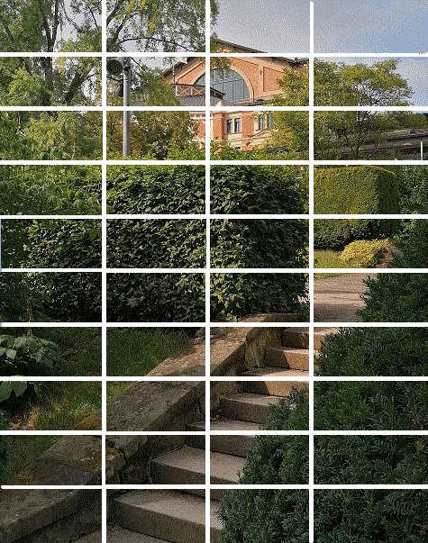

Nuremberg 2021
Voyage du 21 août au 3 septembre 2021
Bayreuth: Les Maîtres-chanteurs (Mardi, 23 août 2021)
Le temps est frais et humide, mais il ne pleut pas. Nous arrivons à 2 heures pile au Théâtre du festival, après une errance interminable à travers la pittoresque Suisse franconienne dont notre navigateur a jugé bon de nous gratifier.
Cette visite au temple de la musique wagnérienne fait suite à 4 longues années d'attente pour obtenir des places, dont l'une dûe à l'annulation du spectacle en raison de l'épidémie.
Nous pouvons garer notre voiture dans un parking aménagé à quelques mètres seulement du "hangar" (Scheune) comme Günter Grass, l'auteur du "Tambour", appelle le fameux théâtre. Après avoir vu le plafond orné de cordes et de mats, je crois que "cirque" conviendrait mieux à ce fruste édifice de brique et de métal. Le reste des installations provisoires évoque d'ailleurs une fête foraine: des boutiques de saucisses, des débits de bière. La culture française, superbement ignorée partout ailleurs en Allemagne, est représentée par un marchand de sandwiches qui a aménagé un fourgon Tub Citroën, le véhicule immortalisé par Louis La Brocante.
Dans sa pub, ce commerçant parle de "französisches Savoir-vivre". Il a dû lire son dico de travers. A l'évidence il pensait à "art de vivre". Mais il a fait un effort louable!
Autant dire que les robes du soir et les noeuds pap dont se parent les adeptes de la secte pour grelotter sous la bruine pendant les longs entractes heurtent la logique cartésienne, dont personne en Allemagne fédérale n'a d'ailleurs jamais entendu parler. Le créateur des lieux, Richard Wagner lui-même, avait jugé qu'un foyer couvert servant d'écrin à l'étalage de signes extérieurs de richesse était contraire à la célébration de ses oeuvres.
Il n'y a pas que les toilettes des dames qui soient reléguées à l'extérieur du théâtre. Les "toilettes" tout court le sont aussi et c'est un certain W. Wagner qui assure ce service dans des véhicules adhoc stationnés le long du théâtre.
Avant d'accéder aux saint des saints, il faut passer par la case "contrôle des passes sanitaires", une immense tente blanche où officient des jeunes gens habillés en stewards et hôtesses de l'air qui scannent le portable et les documents imprimés et enserrent le poignet gauche de l'impétrant d'un bracelet rouge, l'autorisant à circuler librement.
Nous allons voir "Les maîtres chanteurs de Nuremberg" dans la mise en scène de l'Australien Barrie Kosky. Les vedettes du spectacle sont Michael Volle (Hans Sachs), Georg Zeppenfeld (Pogner) Johannes-Martin (Beckmesser), Klaus Florian Vogt (Stolzing), Daniel Behle (David), Camilla Nylund (Eva), Christa Mayer (Madeleine). Le chef d'orchestre est Philippe Jordan qui a désormais quitté l'opéra de Paris.
Comme c'est la règle depuis longtemps en matière d'opéras, la mise en scène n'a rien à voir ni avec le sujet, ni avec les indications scéniques du compositeur. Elle privilégie des images d'Epinal, en l'occurrence, Wagner l'antisémite, Nuremberg la Vile des journées du parti du Reich et du long Procès des dignitaires nazis auquel son nom est attaché. L'inutile anéantissement de ce joyau d'architecture de la Renaissance par l'aviation anglaise en janvier 1945 est également évoquée à la fin du spectacle. La barbarie n'est pas l'apanage des Teutons...
Même si Wagner avait publié sous un pseudonyme en 1850 un pamphlet intitulé "La judéité dans la musique" où il attaquait les compositeurs Meyerbeer et Mendelssohn, son antisémitisme ne devait pas être très virulent, si l'on en juge par l'amitié qu'il portait au chef d'orchestre Hermann Levi (1839 - 1900) qui dirigea la première de Parsifal à Bayreuth en 1882 et qui partagea l'intimité de sa famille, comme cela est décrit dans la mise en scène de l'acte I des Maîtres chanteurs par Kosky et Ulrich Lenz.
Il me semble pourtant que le seul adversaire à combattre clairement désigné dans le texte l'est dans la dernière tirade de Hans Sachs composée en janvier 1867, 3 ans avant la guerre de 1870:
"Zerfällt erst deutsches Volk und Reich
In falscher welscher Majestät
Kein Fürst bald mehr sein Volk versteht
Und welschen Dunst mit welschem Tand
Sie pflanzen uns in deutsches Land."
"L'empire et le peuple allemands
Rongés par la pompe française ,
Quel prince entendra ses sujets
Quand ces brumes et ces fadaises
Auront chez nous droit de cité?"
Où "welsch" désigne les (compositeurs) français et italiens. Dans la mise en scène de Kosky (cf. les 10 dernières images ci-contre), plusieurs personnages avec lesquels l'auteur est censé s'identifier portent un béret, mais c'est celui de Wagner, non un béret basque!
L'opéra authentique fait le procès des formalismes, dont les opéras français avec leur ballet obligatoire et leurs procédés artificiels fournissent les exemples les plus détestables. Ce qui n'empêche que, dans son chant inspiré, Walter rêve d'unir le paradis luxuriant, symbole de l'inspiration spontanée, et le Parnasse classique en un seul jardin merveilleux...
Si la mise en scène avec ses réminiscences pesantes est on ne peut plus discutable, les costumes d'époque de Klaus Bruns sont somptueux et l'on garde grâce à eux un bon souvenir de cette représentation des Meistersingers...
Pour nous remettre de ces émotions et de nos fatigues (6 heures de spectacle!), nos enfants et notre famille allemande nous ont offert une nuit dans un hôtel luxueux s'il en fut, à Bayreuth même. Il est orné d'une contrebasse gigantesque et d'une éffigie de Wagner.
|
 |

|
Bayreuth: Fanfares signalant la fin des entractes
Les Maîtres-chanteurs à Bayreuth (cliquer sur les flèches)